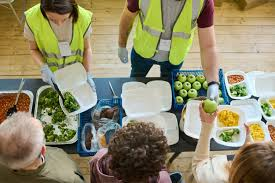
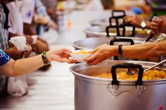

Food & Hunger Relief
Hunger is one of the biggest challenges faced by underprivileged communities. Mother Care Charity runs food drives and nutrition programs to ensure that no one goes to bed hungry.

Food Distribution
- Food distribution in charity work is supported by several humanitarian and social-welfare theories.
From a humanitarian perspective, the Right to Food principle holds that everyone is entitled to adequate,
safe, and nutritious food, and aid programs should respect dignity while meeting basic needs. The Sphere
standards used in disaster relief add practical guidance, defining minimum requirements for calories, protein
and safe handling so that rations protect health and fairness

Nutrition Programs
-
Nutrition programs in charity and public health work draw on several well-established theories.
One is Maslow s hierarchy of needs, which places adequate food close to the base of human requirements; without
proper nutrition, people cannot focus on safety, learning, or long-term goals. Public-health planning often
uses the Social Ecological Model, showing that eating habits are shaped not only by individual choice but
also by family, community, and policy environments so programs must address all these layers

Emergency Relief
-
Emergency relief is the immediate assistance provided to people affected by crises such as floods,
earthquakes, conflicts, or other disasters. Its goal is to save lives, reduce suffering, and protect
dignity until longer-term recovery efforts can begin. Relief usually includes essential supplies like safe
drinking water, food, shelter materials, warm clothing, blankets, and basic medical care.

Sustainable Food Projects
- Sustainable food projects in charity and development work aim to fight hunger while protecting the
environment and strengthening local livelihoods. Instead of only handing out short-term rations,
these programs focus on creating lasting food security by helping communities grow, store, and market
their own produce in ways that care for natural resources.